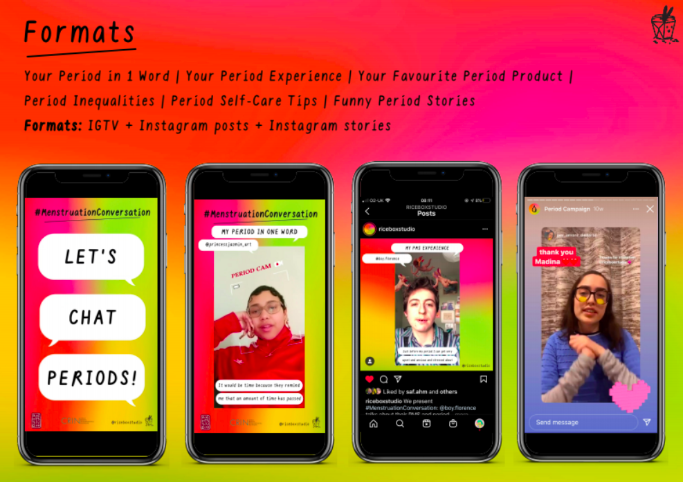
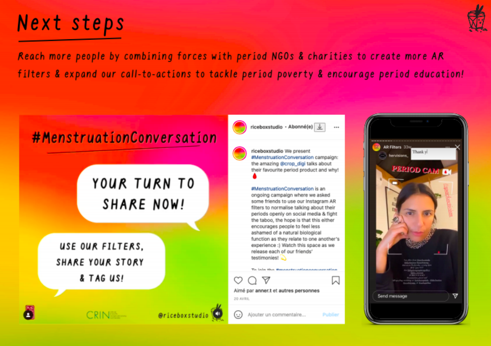

Everyone describing their period in one word (above)
Several slides from our presentation deck introducing the campaign (below)


#MenstruationConversation
#MenstruationConversation is an ongoing campaign where we asked some friends to use our period-related Instagram AR filters to normalise talking about their periods openly on social media & fight the taboo. The hope is that this either encourages people to feel less ashamed of a natural biological function as they relate to one another’s experience! Watch this space and our Instagram as we release more of our friends’ testimonies!
To join the #MenstruationConversation, use one of our filters, tag us and someone you know and share your story!
Roles:
Content Design
Video Editing
Social Media Promotion